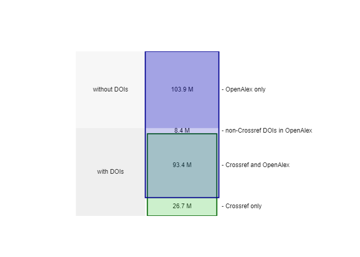
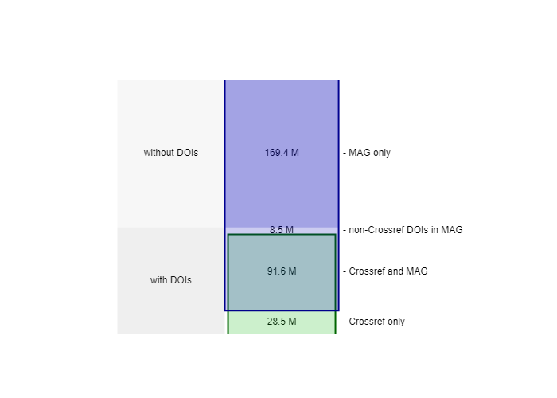
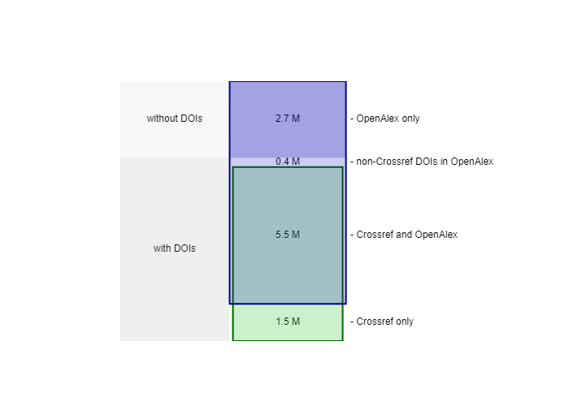
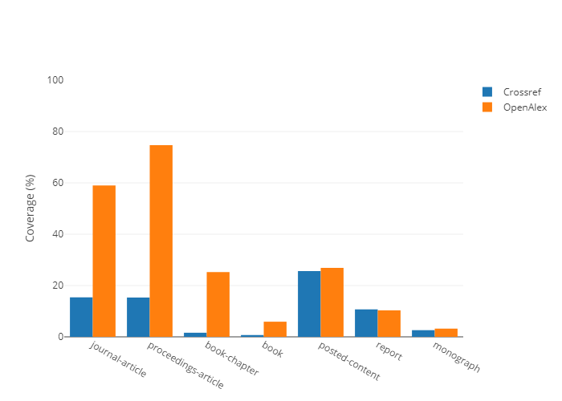
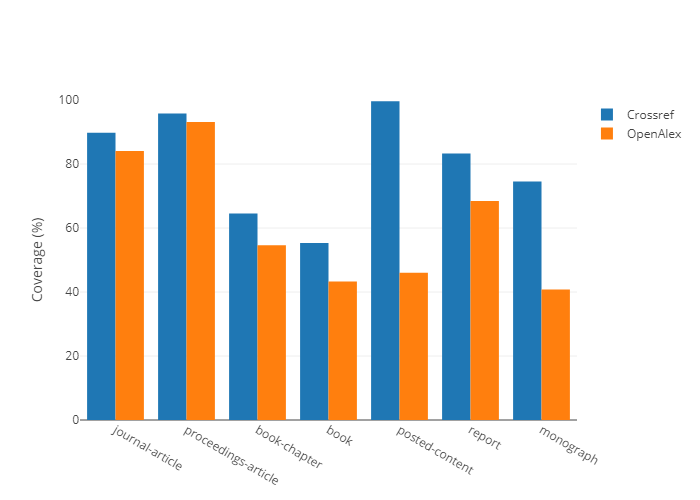
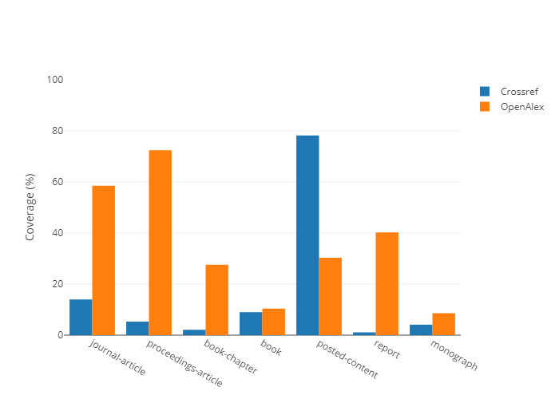
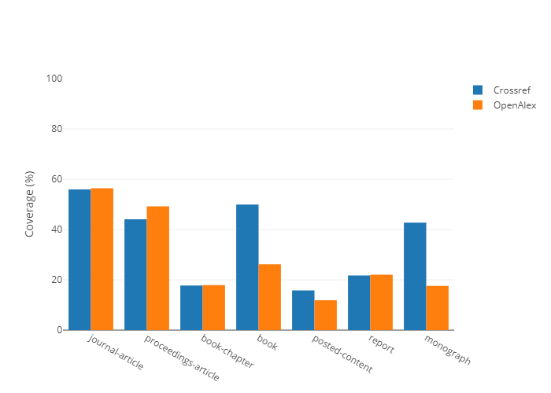
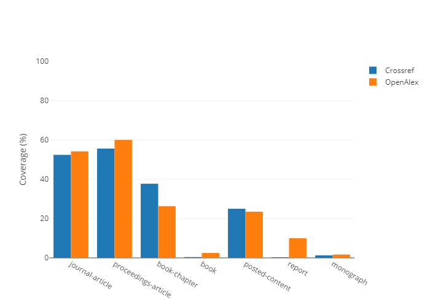
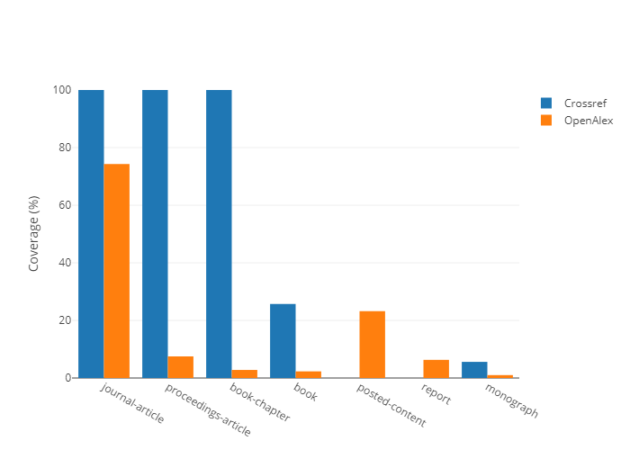
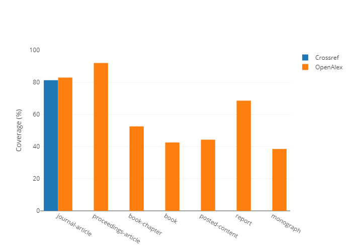

OPEN METADATA SOURCES
Here we write some background stuff, probably using the abstracts we have I guess, can also include some summary statistics and other useful things.
This report was run using the following tables as source data: Crossref: academic-observatory.crossref.crossref_metadata20220107 Crossref Member Data: utrecht-university.crossref.member_data with date recent OpenAlex Native Format utrecht-university.OpenAlex.Work20220130 Microsoft Academic:
There is actually a way, I think of pulling in a table of contents, but I haven't done that previously. Or it can be done manually obviously.
Stuff on MAG going away and the motivation for tracking completeness
Do we need a section that gives some brief background on the data sources?
OpenAlex is based initially on metadata from Microsoft Academic and the overall coverage compared to Crossref is consistent with for publications over all time. Noting that OpenAlex has made a decision to not cover all the content types that MAG did, these two charts show a difference for the non-Crossref materials but very similar results for the content that has Crossref DOIs.


Therefore it is of interest to look at a specific recent year, in this case 2020.

We can do loops eg over the data elements. But this might be better for a supplementary data section as we will presumably want to actually comment on the graphs themselves?
TODO: There is a bug in the xhtml2pdf package which means it only works with complete paths on windows. This creates an issue as we would need to use precipy to give us the full path but I'm not sure whether we can use a variable inside that full path declaration. Some experimentation required.

The above will not work on windows...may need to figure a work around for that

The above will not work on windows...may need to figure a work around for that

The above will not work on windows...may need to figure a work around for that

The above will not work on windows...may need to figure a work around for that

The above will not work on windows...may need to figure a work around for that

The above will not work on windows...may need to figure a work around for that

The above will not work on windows...may need to figure a work around for that